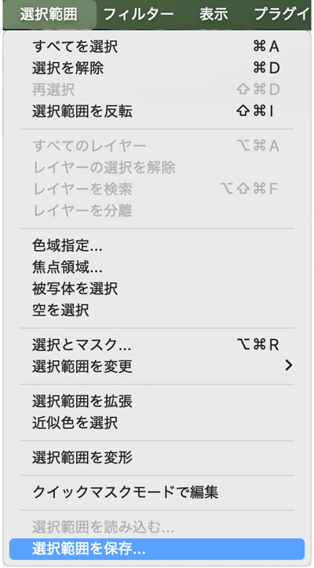
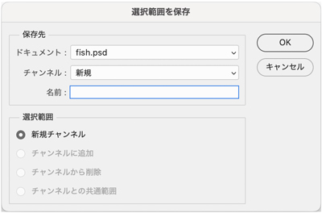
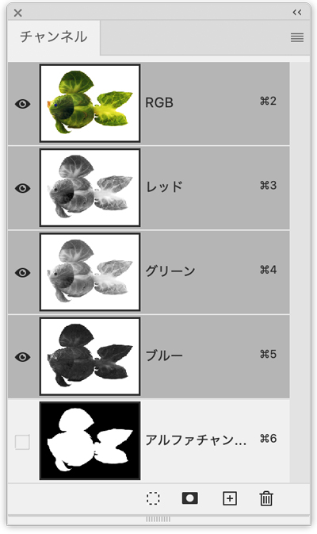
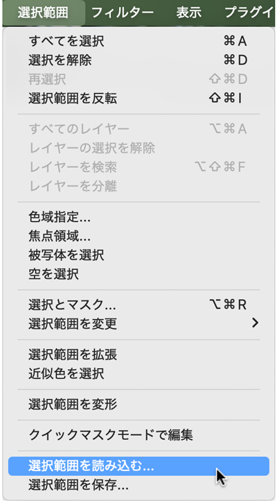
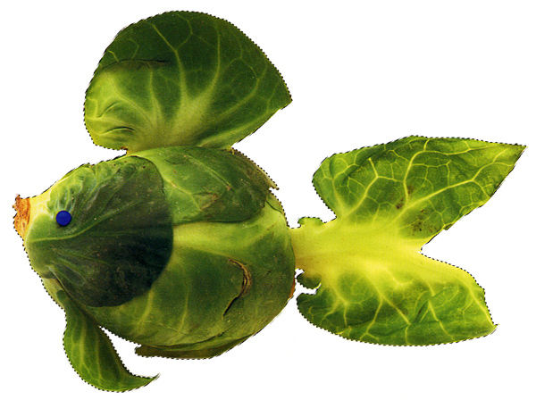

選択範囲を保存
- 「選択範囲」を保存することによって次のステップに進めやすくなります
- メモリを管理して、Photoshopをフリーズしないように使用するためにも役立ちます
アルファチャンネル
- 「選択範囲」を保存すると「アルファチャンネル」が作成されます



選択範囲を読み込む
- 選択範囲を読み込んで編集可能な状態にする


アルファチャンネルのサムネイルを「Ctrl + クリック」
- 「選択範囲を読み込む」と同じ状態になり、編集可能になります